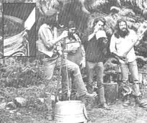

Marc Bristol and other Washington State grassroots musicians wail away on a gutbucket, washboard, and jug (the axe is a gag). For Marc’s original homegrown music column-which featured gutbucket, washboard, jug kazoo, musical saw, and spoons “makin’ and playin’ “instructions-see MOTHER NO. 50. Insert shows gutbucket “notch and bevel” details.
Even homesteaders need to relax and enjoy themselves from time to time, right? And almost everybody these days wants to cut his or her cost of living. So how about a little do-it-yourself entertainment?
And that's what this column is all about. Down-home music that you can make... and the instruments (which, in some cases, you can also make!) to play that music on.
We may also publish some songs, discuss music as a potential home business, run discographies, bibliographies, and/or include whatever other do-it-yourself music topics you'd like to see.
The important thing is that this is your column. If you like it, write to me and let me know. If you have some ideas for this feature, let me know that. I'm open to any suggestions or information you care to contribute. I'll even try to answer your questions about down-home music... but-both for the benefit of all MOTHER'S readers and to ease my correspondence load-I'll deal with those questions, whenever possible, here in this column... rather than in personal letters.
Address your correspondence- for this column and this column only-to Marc Bristol, 31722 N.E. 180th Place, Duvall, Wash. 98019.
You say your homestead's sound system is made up of a bargain basement transistor radio and a portable cassette player, but that you daydream of owning a big-bucks stereo setup? Well sir, I can't work miracles, but I can tell you how-for little or no money-you can get your inexpensive "music makers" to put out "big system" sound!
The simple fact is that most portable radios and recorders are capable of much more accurate sound reproduction than their small speakers can deliver. So... all you have to do to bring the little electronic marvels "up to snuff" is hook 'em to a high-fidelity speaker system!
Just what do I mean by a "high-fidelity speaker system"... and how much will it cost? Well, I'm talking about the speakers that used to be standard features on most large black-and-white television sets (they were usually covered by a big grille cloth and positioned on the bottom of the TV's cabinet). The old picture boxes have, for the most part, given up the ghost... so a trip to the dump (or a "broken televisions hauled away free" ad) should turn up all of the no-cost speakers you'll need!
In order to evaluate your sound bounty, however, you'll have to make a special cord to test (and use) the speakers with. You'll need four to six feet of speaker wire (available at stereo shops or hardware stores for about 10 cents per foot), a small "plug" (this can be found in electronic parts stores... be sure to buy the right size to fit the earphone jack of your radio or tape player), and a pair of alligator clips (pick 'em up when you buy the plug). Simply connect the plug to one end of the twin wire, and fasten the two clips-one to each wire-at the other end. (If you don't want to solder the parts in place, you can buy both the clips and the plug with screw-type connections.)
With your test cord made, you're ready to try out some speakers. First, either remove the "sounders" from the old TV cabinet, or leave 'em in and take out the rest of the television's "guts". (Whether you want to use the speakers in their original cabinet or not, be especially careful when handling or working near the picture tube... such components are under considerable pressure and can implode dangerously.) Then just use your wire to connect a portable radio or cassette player's earphone jack to the two terminals on the back of the speaker itself... and be prepared to be "blown away" by the power and range of the sounds your little set will suddenly be capable of producing!
The same add-a-component concept can bring surprising results at the "other end" of a small tape recorder, too. Such sets usually come equipped with their own tiny microphones, but-if you can contrive to connect a better mike to the unit's external microphone input, you'll be rewarded with better sound from your speakers (especially if those components have already been improved as described above).
Of course, most good mikes don't have miniature jacks on the ends of their cords, but adapters are available (again, check electronic parts stores) that'll allow you to make the connection. Try it out. I guarantee that-once you upgrade the microphone and speaker on your low-cost cassette player as I've suggested-you'll be truly impressed with the recorder's "rich" performance.
Last year (in MOTHER NO. 54, page 128) this column listed a number of independent record companies (firms that're producing albums with down-home music on 'em... instead of the usual media-hyped disco trash that the big companies are offering). Since that article drew a good bit of response from you folks, I've prepared a second listing... and plan to continue to mention small producers as I gather information on 'em. After all, such "little guys" help to keep available the kind of music that many of us MOTHER-types like best.
(Any companies or individuals that might be inclined to write to me for a listing should know, however, that I usually put my column together about four months before it actually appears. So Homegrown Music doesn't exactly provide instant press coverage!)
ADELPHI RECORDS, INC. (Dept. TMEN, P.O. Box 288. Silver Spring, Maryland 20907) is primarily concerned with the East Coast folk music scene. The people there sent me several albums to try out, including Saul Broudy's Travels With Broudy... which is a nice mixed bag of songs by one very talented harmonica player and singer. I don't know whether Adelphi puts out a catalog-or what the company charges per album-but a letter (with a self-addressed, stamped envelope and a dollar for the firm's trouble) should get you some kind of list of the albums it offers.
WISE WOMEN ENTERPRISES (Dept. TMEN, P.O. Box 297, West Station, New York 10014... $6.00 per album, postpaid) is a company that aims to give women a crack at the production end of the recording industry (an area that-in larger firms-they are often left out of), as well as at performing. The firm sent me an album called Debutante, by Willie Tyson, which is an outstanding combination of very beautiful music and meaningful social protest. I particularly recommend the song "Debutante Ball"... a sharp comparison between certain human courtship rituals and the proceedings at a local cattle auction.
SWALLOWTAIL RECORDS (Dept. TMEN. Box 843, Ithaca, New York 14850... albums $5.00 each plus 75 cents postage and handling per order, or $4.50 apiece for orders of five or more) offers a free one-page catalog including English ballads, traditional American and Balkan tunes, contemporary music, and string bands.
MARGARET PLAYS THE MUSICAL SAW (available from the artist-Margaret Steinbuch-at Dept. TMEN, 3572 Schwartz Avenue, Cincinnati, Ohio 45211... $6.50 postpaid) is a collection of old melodies performed by a seventy-year- old grandmother and veteran of the vaudeville stage. Margaret only recently took up the musical saw (the violin was her instrument for most of her first 60 years!), but she's a masterful performer.
HENRY THE FIDDLER AND FRIENDS... THE FIRST ALBUM (available from Henry the Fiddler, Dept. TMEN, 613 Michigan Avenue, Evanston, Illinois 60202... $6.00 postpaid) is an album recorded live at Fiddler's Grove (Union Grove, North Carolina). The disc really captures the excitement of the kind of jam sessions that are among the most important features of any folk festival.
BRAND NEW ROSE (by Jef Jaison, Virgin Vinyl Records, Dept, TMEN, P.O. Box 92, Bothell, Washington 98011... $4.98 postpaid) is a self-produced collection of rock-oriented tunes. Jef's album is noteworthy for reasons beyond its musical appeal (which is considerable), too: For one thing, its low price reflects the artist's personal crusade against the inflationary costs of major record company productions, and-for another-"Brand New Rose" marks my own recording debut... playing washboard backup to a tune about Jef's 1946 Olds-mobile! (I plan to devote an entire column to self-produced records, like Jef's, in the near future.)
RIVERSONG (by Mark Henley, Sanskrit Records, Dept. TMEN, 7515 Way-zata Boulevard No. 110, Minneapolis, Minnesota 55426... $6.00 postpaid) is a fine acoustic album that's full of the kind of mellow romanticism I think of as typical of Midwestern folk music. The sensitive songs are backed by beautiful arrangements... featuring guitar, banjo, mandolin, percussion instruments, piano, violin, cello, and vocal harmonies.
STILL LIFES (by Tom Smith, Lone Oak Publications, Dept. TMEN, 1316 North Edgemont No. 309, Los Angeles, California 90027... $6.00 postpaid) is a kind of introspective solo acoustic guitar album that captures the special mood of a relaxed cafe performance.
Finally, I'd like to recommend a mail order distributor that carries several old-timey, traditional, and bluegrass labels: REAL LIFE RECORDS (Dept. TMEN, 28 Lincoln Street, Glen Ridge, New Jersey 07028) offers a free catalog and a decreasing price scale to its customers: The first record you order will cost $5.50, and each succeeding album on the same order-up to 10 titles-is 20 cents less... so the tenth record would only cost you $3.70! That's a "Real Life" bargain any way you look at it!
Before I close I'd like to thank the fine folks at Biscuit City, Bay, and Takoma Records (see my column in MOTHER NO. 54 for the addresses) for keeping me up to date on their newest productions. All three of these companies are maintaining a high quality of folk-oriented recordings.
|
 PHOTO BY TOM ALLEN |
|
|